Не просто код, а логика продукта
Я думаю сценариями: куда нажмет пользователь, где оставить заявку, как не терять клиента и как автоматизировать рутину.
initializing portfolio system...
Я не просто пишу код. Я собираю рабочие сценарии: заявки, запись клиентов, лидогенерацию, CRM-логику, AI-диалоги, воронки и внутреннюю автоматизацию.
кратко обо мне
Python разработчик / AI automation developer. С января 2023 по январь 2026 занимался разработкой и проектированием Telegram-ботов для автоматизации бизнес-процессов.
ценность для работодателя
Я думаю сценариями: куда нажмет пользователь, где оставить заявку, как не терять клиента и как автоматизировать рутину.
Не абстрактная теория, а практические боты: запись, заявки, прогрев, AI-ассистенты, таблицы, CRM-логика, уведомления.
Я умею разбирать хаос в нормальную систему: собрать структуру, понять требования и довести до рабочего результата.
Могу встроить AI туда, где он реально нужен: ответы клиентам, объяснение услуг, прогрев, интерактив, работа с контекстом.
Это готовый Telegram-продукт, а не услуга и не разработка с нуля. Вы получаете полностью собранную систему монетизации через живое ИИ-общение: персонажи, сценарии, подписки и лимиты уже настроены и работают как единая логика.
🔥 Что внутри: живое диалоговое общение (не шаблоны), несколько персонажей с разным характером, сценарии общения (квартира, ночь, прогулка и др.), подписки/лимиты/логика удержания, полностью рабочий Telegram-бот (код и структура).
📈 Как обычно используют формат: подписка 400–3000 ₽, 100 активных пользователей ≈ 40–100 тыс. ₽/мес. (это не гарантия, а математика модели).
✅ Кому подойдёт: если хотите запустить монетизацию в Telegram через подписку (даже без канала), если у вас есть канал/чат и вы хотите удержание + платные лимиты, если нужен готовый продукт "под ключ".
🎁 Передача: настраиваю под ваш проект, запускаю и проверяю работу, передаю код и доступы + пошаговая инструкция.
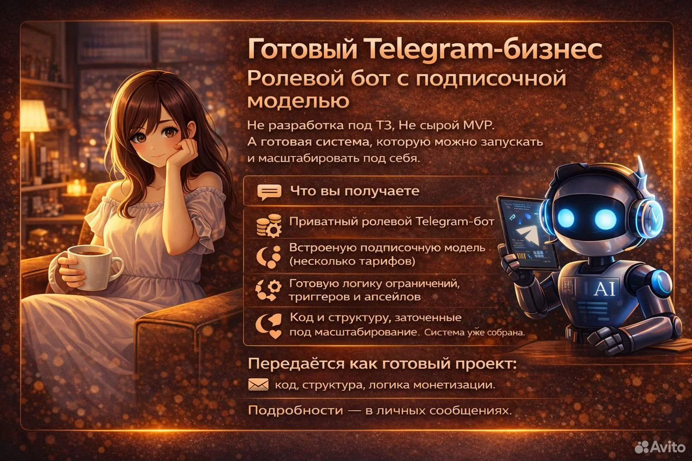
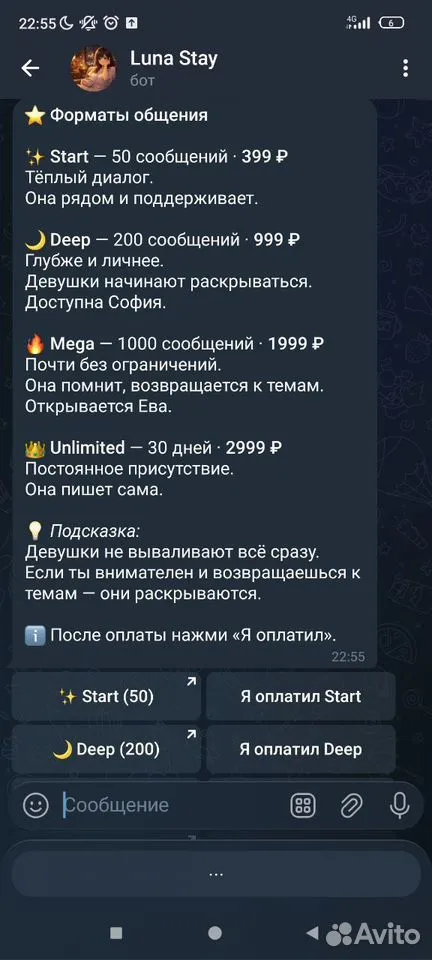
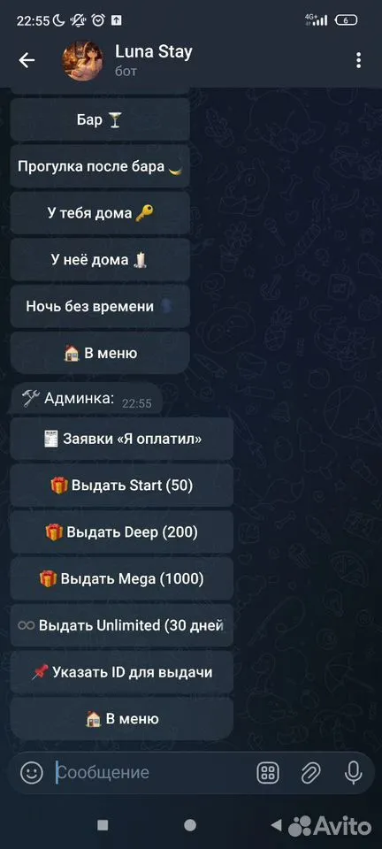
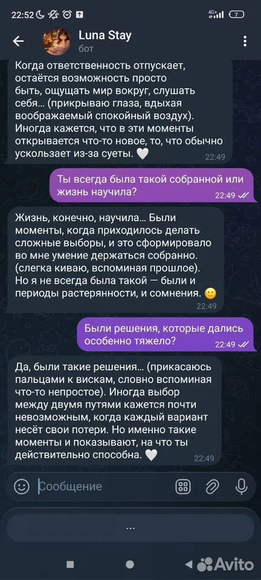
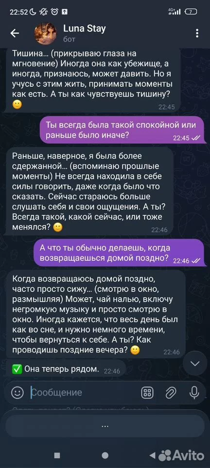
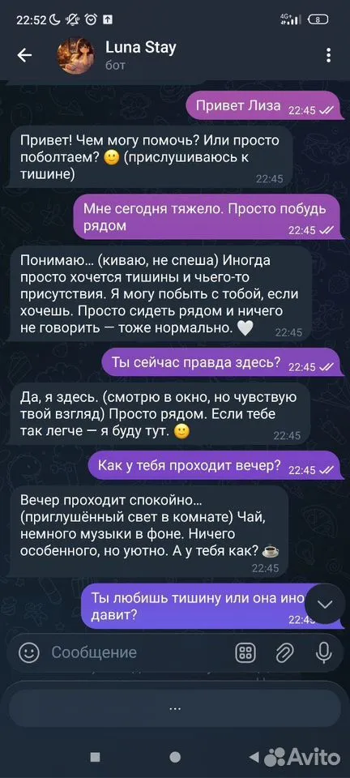
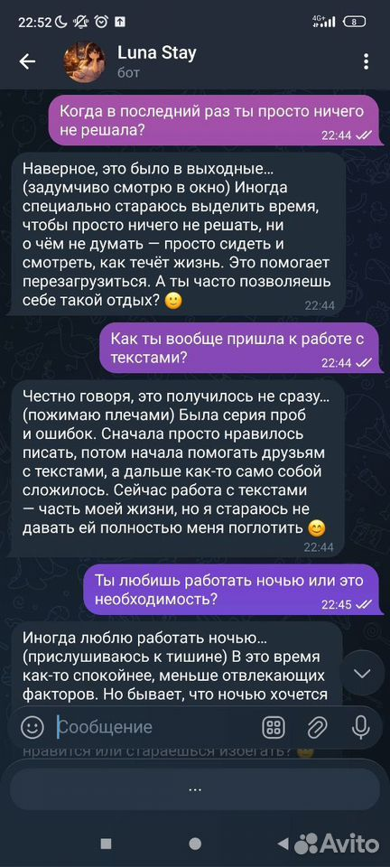
Если запись идёт через личные сообщения, вы тратите часы на однотипные ответы. И всё равно часть клиентов "подумают и исчезнут". Эта система автоматизирует первичный диалог и доводит клиента до конкретного времени записи.
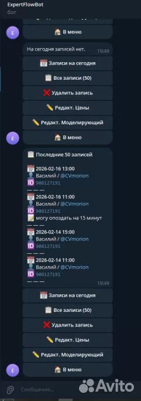
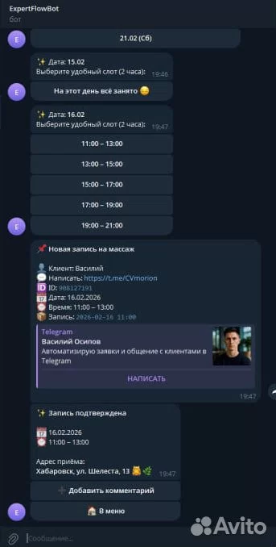
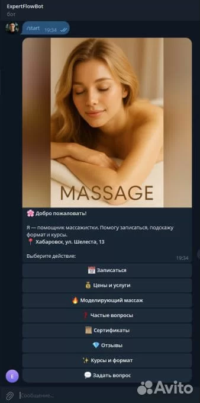
реализованные проекты
Автоматизация записи клиентов, презентация услуг, ответы на частые вопросы и сбор заявок.
Проект через Kwork: автоматизация обработки входящих обращений и запись на консультации.
Реализованы тарифные планы, реферальная программа и отслеживание источников трафика.
Системы обработки заявок и хранения данных пользователей, по сути CRM-логика внутри бота.
Использование AI-инструментов в ботах для объяснения услуг, сопровождения клиента и интерактивного общения.
Боты как цифровая визитка: примеры работ, логика меню, заявки, описание услуг, навигация, контент и первичная воронка.
портфолио по названиям
визуальные примеры
Ниже можно показать живые экраны, меню, заявки, ответы AI, диалоги и навигацию внутри ботов.
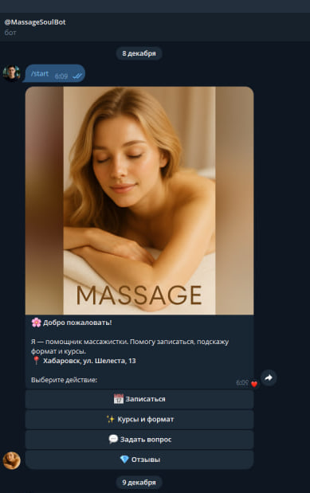


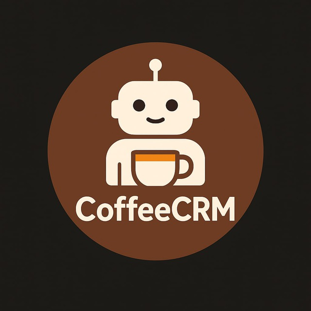

технологии
как я подхожу к работе
Сначала разбираю, что реально нужно проекту: запись, лиды, объяснение услуг, AI, воронка, внутренняя логика.
Продумываю путь пользователя, кнопки, шаги, вопросы, точки захвата контакта и структуру данных.
Реализую логику, интеграции, формы, AI-функции, таблицы, уведомления и нужную механику.
Улучшаю пользовательский путь, тексты, поведение бота и удобство использования, чтобы система реально работала.
контакты
Можно написать по проекту, по вакансии, по сотрудничеству или просто обсудить задачу.